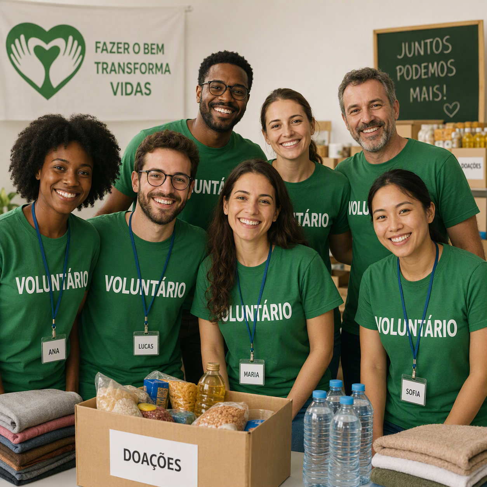
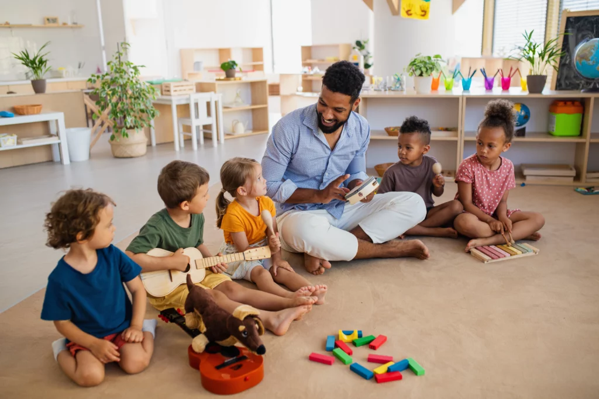
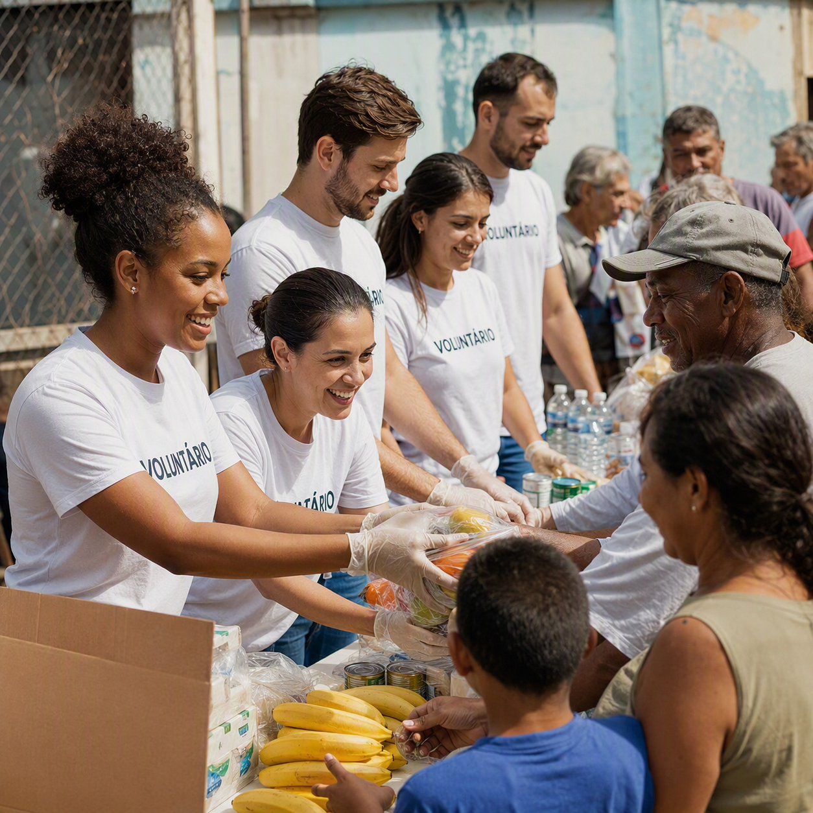
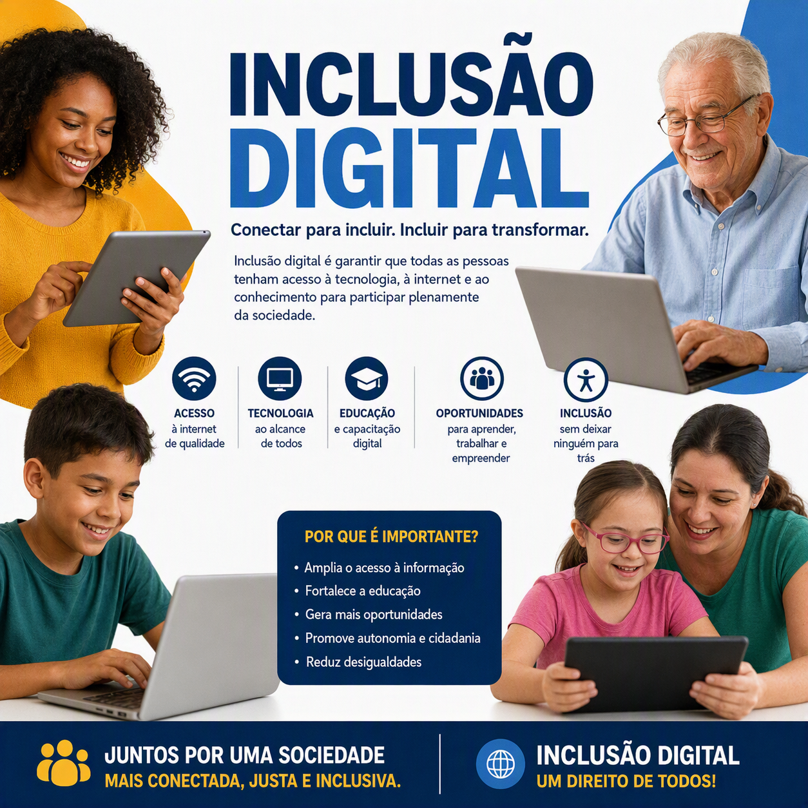
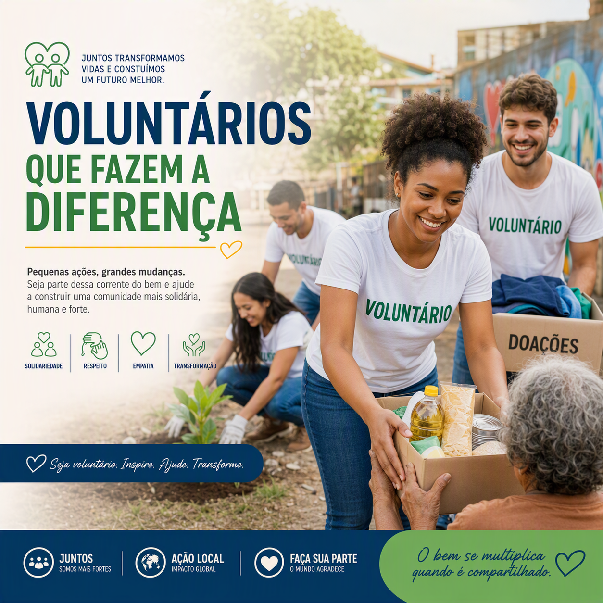

Conheça detalhadamente as frentes de ação onde atuamos para transformar a realidade da nossa comunidade.

AtivoVoluntariado Geral
Unimos forças comunitárias para apoiar mutirões, eventos beneficentes e suporte imediato a abrigos parceiros da região.
Quero Ser Voluntário
Inscrições AbertasReforço Escolar & Música
Projetos socioeducativos no contraturno escolar focado no desenvolvimento artístico, musical e pedagógico de crianças.
Inscrever um Aluno
UrgenteBanco de Alimentos
Arrecadação contínua e montagem de cestas básicas destinadas a famílias mapeadas em extrema vulnerabilidade socioeconômica.
Fazer uma Doação
Novas VagasFuturo Digital
Capacitação gratuita em informática básica, ferramentas de escritório e introdução ao mercado de tecnologia para jovens.
Ver Cronograma Campanha Ativa
Campanha Ativa
Arrecadação de Inverno
Mobilização para coleta de agasalhos, cobertores, calçados e brinquedos em bom estado para distribuição estratégica.
Onde Entregar?
ContínuoImpacto Social Relatórios
Acompanhamento psicossocial e desenvolvimento de oficinas comunitárias focadas na autonomia das famílias assistidas.
Ver Prestação de Contas